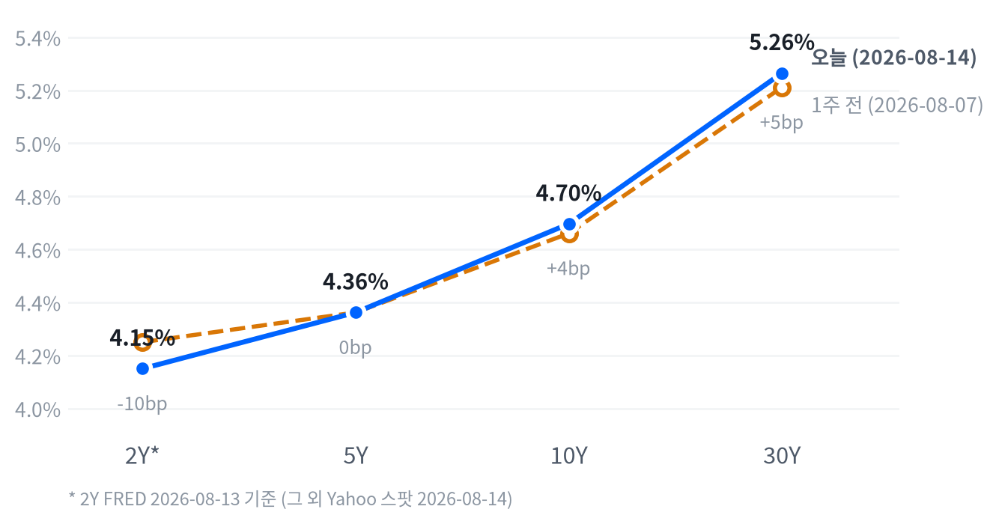

오늘 장은 서로 다른 방향을 가리키는 두 매크로 신호가 동시에 부딪힌 하루였다. 7월 소매판매(-0.58%, 컨센서스 +0.1% 하회)와 8월 미시간 소비자심리지수 예비치(뉴스 기준 51.0, 컨센서스 54.5·7월 확정치 55.2 모두 하회)는 소비 냉각과 금리 인상 경계 완화를 가리켰고, 미국의 대이란 압박 강화에 따른 WTI(+1.42%)·Brent(+1.75%) 급등은 정반대로 인플레이션 재부각 신호를 냈다. 여기에 브로드컴(AVGO, 뉴스 인용) AI 칩 파이낸싱 부채 우려까지 겹치며 대형 기술주 심리가 흔들렸다.
크로스에셋 정합성은 절반만 성립한다. 단기금리(2Y -5.0bp)·달러(DXY -0.32%)가 소비 부진을 반영해 하락한 것은 논리적으로 일관되지만, 장기금리(10Y·30Y 각각 +5.5bp·+5.2bp)는 유가발 인플레 우려로 오히려 올라 커브가 스티프닝됐다. 에너지·유틸리티·리츠가 동반 강세를 보인 것도 유가 상승과 단기금리 하락이라는 서로 다른 두 힘이 같은 섹터를 밀어올린 결과로, 방향은 같지만 근거는 다른 셈이다. 러셀2000의 사상 최고치 경신은 대형 기술주의 AI 파이낸싱 우려와 무관하게 소형주에 독자적인 자금 흐름이 유입됐음을 시사한다.
다음 촉매는 다음 주로 예정된 8월 엠파이어스테이트 제조업지수·필라델피아 연은 지수 등 지역 연은 서베이와 9월 16일 FOMC를 향한 CME FedWatch 확률 추이다. 이번 주 CPI 발표 직후(8/12) CNBC가 보도한 인상 확률(38.1%)이 이란발 유가 급등 이후 다시 높아졌을 가능성이 거론되는 만큼, 다음 지표에서 이 확률이 실제로 되돌려지는지 확인해야 한다. 메모리·AI 인프라 밸류체인은 브로드컴발 파이낸싱 우려가 다른 종목으로 전이되는지가 관건이다.
| 지수 | 종가 | 전일比 | 등락률 |
|---|---|---|---|
| 러셀2000 | 3,068.42 | +15.57 | +0.51% |
| S&P500 Value | 238.09 | +0.08 | +0.03% |
| S&P500 | 7,785.76 | -13.23 | -0.17% |
| 다우존스 | 53,732.41 | -107.58 | -0.20% |
| 나스닥종합 | 26,729.16 | -73.87 | -0.28% |
| S&P500 Growth | 141.98 | -0.56 | -0.39% |
| 섹터 | 종가 | 전일比 | 등락률 |
|---|---|---|---|
| 에너지 | 61.91 | +0.85 | +1.39% |
| 유틸리티 | 44.31 | +0.27 | +0.61% |
| 소재 | 52.54 | +0.23 | +0.44% |
| 산업재 | 186.51 | +0.72 | +0.39% |
| 커뮤니케이션 | 112.95 | +0.40 | +0.36% |
| 리츠 | 45.27 | +0.15 | +0.33% |
| 필수소비재 | 86.09 | +0.09 | +0.10% |
| 금융 | 58.16 | -0.10 | -0.17% |
| 임의소비재 | 118.20 | -0.25 | -0.21% |
| 기술 | 190.01 | -0.76 | -0.40% |
| 헬스케어 | 167.37 | -1.01 | -0.60% |
나스닥은 정규장 개장(09:30 ET)과 동시에 개장가 26,842.32에서 세션 고점(26,859.27)을 찍었지만 이후 8:30 ET 발표된 7월 소매판매 쇼크와 10:00 ET 미시간 소비자심리지수 예비치 부진이 겹치며 11:30 ET까지 밀려 저점(26,662.51, 개장가 대비 -0.67%)을 형성했다. 종가는 -0.28%로 낙폭을 절반 가까이 되돌리며 마감했다.
S&P500도 비슷한 궤적을 그렸다. 10:00 ET 고점(7,810.01)을 찍은 직후 미시간 지표 발표 여파로 낙폭을 키워 13:30 ET에 저점(7,776.31, 개장가 대비 -0.39%)을 다졌고, 오후 들어 소폭 반등해 -0.17%로 마감했다.
반면 러셀2000은 대형지수와 결이 달랐다. 개장 직후(09:30 ET)에 이미 세션 저점(3,050.23)을 찍은 뒤 소비 지표 부진에도 불구하고 하루 내내 꾸준히 올라 종가(15:30 ET)를 세션 고점으로 마감했다 — 대형 기술주·소비 관련주가 매크로 쇼크에 흔들리는 사이 소형주는 별개의 자금 흐름을 탄 하루였다.
엔비디아는 지수보다 훨씬 가파르게 움직였다. 09:30 ET 장 초반 고점(227.49, 개장가 대비 +0.30%)을 찍은 뒤 10:00 ET 저점(224.50, -1.01%)까지 급락했다가 종가 225.16(-0.06%)으로 낙폭을 대부분 되돌렸는데, 같은 시간대 데이터셋 미포함 종목인 브로드컴(AVGO)이 AI 칩 파이낸싱 부채 우려(뉴스 인용, Benzinga·24/7 Wall St 보도)로 6~7% 급락하며 AI 반도체 밸류체인 전반의 심리를 흔든 영향으로 풀이된다.
오늘 지수 흐름의 본질은 대형 성장주·소비 민감주 대 소형주·가치주·경기민감주의 로테이션이다. S&P500 Growth(-0.39%)와 Value(+0.03%)의 격차, 러셀2000(+0.51%)의 사상 최고치 경신이 이를 뒷받침한다. 소매판매·미시간 심리 부진이라는 비둘기派 매크로 데이터가 오히려 대형 기술주보다 금리 민감도가 높은 소형주에 우호적으로 작용한 하루였다.
섹터 최상위인 에너지(+1.39%)는 이란발 지정학 리스크로 급등한 유가를 그대로 반영했고, 유틸리티(+0.61%)·리츠(+0.33%) 등 금리 민감 방어주도 동반 강세를 보여 단기금리 하락(2Y -5.0bp) 흐름과 정합적이다. 반대로 헬스케어(-0.60%)·기술(-0.40%)이 최하위에 머문 것은 브로드컴발 AI 파이낸싱 우려가 대형 기술주 심리를 짓누른 결과로 해석할 수 있다.
| 만기 | 종가(8/14) | 전일比 | 1주 전 | 주간 변화 |
|---|---|---|---|---|
| 2Y* | 4.15% | -5.0bp | 4.25%(8/6) | -10.0bp |
| 5Y | 4.362% | +4.9bp | 4.362%(8/7) | 0.0bp |
| 10Y | 4.696% | +5.5bp | 4.660%(8/7) | +3.6bp |
| 30Y | 5.265% | +5.2bp | 5.211%(8/7) | +5.4bp |

8/14 하루로 보면 Yahoo 동일자로 비교 가능한 5Y(+4.9bp)·10Y(+5.5bp)·30Y(+5.2bp)가 거의 같은 폭으로 올라, 이 구간만 놓고 보면 스티프닝·플래트닝보다는 대체로 평행한 금리 상승에 가깝다. 반면 하루 뒤진 2Y(FRED, -5.0bp)는 오히려 낮아졌는데, 기준일이 다른 만큼 이를 하루치 커브 변화로 단정하기는 어렵다.
1주일 단위로는 방향이 뚜렷해진다. 5Y는 주간 기준 보합(0.0bp)에 머문 반면 10Y(+3.6bp)·30Y(+5.4bp)는 벨리보다 뚜렷하게 더 올라, 비교 가능한 5Y~30Y 구간에서는 장기물이 벨리를 앞서 오르는 베어 스티프닝이 한 주 내내 진행됐다. 2Y도 주간 기준 -10.0bp로 낮아져 액면가로는 2s10s가 벌어지는 방향이지만, 이 구간 역시 FRED 8/6~8/13 기준으로 다른 만기보다 하루 뒤처진 데이터라는 점을 감안해야 한다.
2s10s(54.6bp 혼합 기준)와 동일자 FRED 기준(48.0bp)의 6.6bp 격차는 5bp 기준을 넘어서는 수준으로, 실제 커브 수준의 변화라기보다 2Y의 기준일 지연에서 비롯된 부분이 크다고 봐야 한다. 반면 90.3bp에 달하는 5s30s(Yahoo 동일자)는 장기 구간이 벨리보다 여전히 가파르게 서 있는 정상화(디스인버전) 국면임을 보여준다.
이번 주는 소비 지표 부진(비둘기派)이 단기금리를, 이란발 유가 급등(인플레 재부각)이 장기금리를 각각 반대 방향으로 끌어당긴 한 주였다. 그 결과 5Y~30Y 구간에서 장기물이 벨리보다 더 크게 오르는 베어 스티프닝이 진행됐고, 30Y 신규 듀레이션 확대는 유가 상승세가 꺾이는 신호가 나오기 전까지는 보류하는 편이 합리적이다.
포지셔닝은 벨리~단기 구간 중립, 장기물 비중 축소 유지를 권고한다. WTI·Brent가 추가로 급등하며 인플레이션 기대가 재차 높아지는지, 그리고 다음 주 CME FedWatch 9월 FOMC 인상 확률이 이번 주 소비 지표 부진분을 되돌리는지를 확인 트리거로 삼아야 한다.
| 페어 | 종가 | 전일比 | 등락률 |
|---|---|---|---|
| EUR/USD | 1.1573 | +0.0043 | +0.37% |
| USD/KRW | 1,416.48 | +0.02 | +0.00% |
| USD/JPY | 159.31 | -0.12 | -0.08% |
| 달러인덱스(DXY) | 99.64 | -0.32 | -0.32% |
USD/JPY는 뉴욕장 개장 전인 01:00 ET에 세션 고점(159.51, 개장가 대비 +0.03%)을 찍은 뒤 소매판매·미시간 심리 부진이 반영되며 13:30 ET까지 미끄러져 저점(158.60, -0.54%)을 형성했고, 이후 낙폭을 상당 부분 되돌리며 159.31(-0.08%)로 마감했다.
달러인덱스는 -0.32%로 이틀 연속 하락했다. 소비 지표 부진이 9월 FOMC 인상 경계를 다소 누그러뜨린 결과로 풀이되며, 유로가 +0.37%로 주요 통화 중 가장 크게 달러 대비 강세를 보이며 이를 그대로 반영했다. 반면 엔화는 -0.08%로 달러 약세 흐름에 비해 덜 따라가 저조했고, 원화는 사실상 보합(+0.00%)에 머물러 통화별 반응 강도가 크게 엇갈린 하루였다.
| 품목 | 종가 | 전일比 | 등락률 |
|---|---|---|---|
| Brent유 | 88.59 | +1.52 | +1.75% |
| 금 | 4,432.00 | +68.40 | +1.57% |
| WTI | 82.40 | +1.15 | +1.42% |
| 천연가스 | 2.71 | -0.01 | -0.44% |
WTI는 이날 최대 변동 원자재였다. 자정 이전 새벽(03:00 ET)에 세션 고점(82.99, 개장가 대비 +2.02%)을 찍은 뒤 뉴욕 정규장 개장(09:30 ET)까지 급격히 밀려 저점(80.76, -0.73%)을 형성했고, 이후 낙폭을 되돌리며 +1.42%로 마감했다. 미국의 대이란 압박 강화(해상 봉쇄 "무기한 지속" 가능성 시사) 보도가 유가를 밀어올린 1차 동인으로 지목된다. Brent(+1.75%)도 같은 방향으로 움직였다.
금 역시 유가와 같은 방향이었다. 새벽 01:30 ET 저점(4,365.60, 개장가 대비 -0.31%) 이후 뉴욕장 개장(09:30 ET)에 세션 고점(4,454.60, +1.72%)까지 급등했고, 이후 소폭 조정을 거쳐 +1.57%로 마감했다. 이란 관련 지정학 리스크에 따른 안전자산 수요와 소비 지표 부진에 따른 단기금리·달러 약세가 동시에 겹치며 금값을 밀어올린 것으로 볼 수 있다.
천연가스는 -0.44%로 원유·금과 다른 방향을 보이며 에너지 복합체 내에서도 개별 수급 요인이 갈렸다.
| 자산군 | 판단 | 전략 근거 |
|---|---|---|
| 주식 | 대형 성장주 비중 축소, 에너지·소형주·가치주 선별 확대 | S&P500 Growth(-0.39%)·Value(+0.03%) 격차, 러셀2000(+0.51%) 사상 최고치 — 브로드컴발 AI 파이낸싱 우려로 대형 기술주 심리가 흔들리는 사이 소형주·가치주·에너지로 자금이 이동 |
| 채권 | 벨리~단기 중립, 장기물 비중 축소 유지 | 주간 기준 10Y(+3.6bp)·30Y(+5.4bp)가 5Y(0.0bp)보다 뚜렷하게 더 올라 베어 스티프닝 — 유가발 인플레 재부각이 장기물을 압박하는 동안 30Y 신규 확대는 보류 |
| FX | 달러 약세 기조 추종, 엔화 개별 약세는 별도 점검 | DXY -0.32% 이틀 연속 하락, 유로(+0.37%)는 이를 그대로 반영했지만 엔화(-0.08%)는 덜 따라가 개별 요인 확인 필요 |
| 원자재 | 유가는 이벤트드리븐 대응, 금은 이중 헤지로 비중 유지 | WTI·Brent가 대이란 압박 보도에 급등(+1.42%, +1.75%) — 지정학 리스크 추이 확인 필요, 금은 안전자산 수요와 달러·단기금리 약세가 동시에 반영돼 이중 헤지 성격 강화 |
| 메모리 | 구조적 강세 추종, 분할 대응 | 씨게이트(+5.65%)·웨스턴디지털(+4.41%)·SK하이닉스(+3.26%)·삼성전자(+2.43%)·마이크론(+2.30%) 동반 급등, 다만 최근 몇 주간 급등락이 반복된 이력을 감안해 일괄매수는 지양 |
| AI 인프라 | 실적 모멘텀 종목 추종, 파이낸싱 리스크는 개별 이슈로 분리 대응 | 루멘텀(+5.19%)은 실적 서프라이즈 여진으로 강세 지속, 마벨(-0.07%)·코히런트(-0.43%)는 보합권 — 브로드컴발 부채 우려가 버티브(+2.36%)·GE버노바(+1.32%) 등 여타 인프라주로는 아직 전이되지 않은 모습 |
① 이란발 지정학 리스크 추가 고조 — 미국의 대이란 압박이 실제 봉쇄나 무력 충돌로 이어질 경우 WTI·Brent가 추가 급등하며 인플레이션 재부각이 가속화되고, 이번 주 이미 오른 장기금리가 더 상승하며 성장주·메모리 밸류에이션에 압박이 가해질 수 있다.
② 소비 둔화 신호 심화 — 소매판매·미시간 심리 부진이 다음 지표에서도 확인되면 경기침체 우려가 부각되며 오늘 강세를 보인 러셀2000·소형주 랠리가 되돌려질 수 있다. 소형주는 신용 여건과 소비 심리에 민감해 되돌림 폭이 클 수 있다.
③ AI 파이낸싱 우려 확산 — 브로드컴발 AI 칩 파이낸싱 부채 이슈(뉴스 인용)가 다른 AI 인프라·반도체 업체로 번질 경우, 오늘 견조했던 마벨·버티브·GE버노바 등도 밸류에이션 재점검 압력을 받을 수 있다.
가장 강한 상승은 메모리·스토리지 그룹에서 나왔다. 씨게이트가 +5.65%로 커버리지 종목 중 최대 상승폭을 기록했고 웨스턴디지털(+4.41%)·SK하이닉스(+3.26%)·삼성전자(+2.43%)·마이크론(+2.30%)이 동반 급등했다. 반면 같은 메모리·AI 밸류체인 안에서도 엔비디아는 -0.06%로 소외됐다.
AI 인프라에서는 루멘텀이 +5.19%로 최대 상승폭을 보였다. 8/12 발표한 FY2026 4분기 실적에서 매출·EPS·가이던스가 모두 컨센서스를 상회한 여진이 이틀째 이어진 결과다. 반대로 데이터셋에는 없지만 브로드컴(AVGO)이 AI 칩 파이낸싱 부채 우려로 뉴스 기준 6~7% 급락하며 이날 테크 하락을 주도한 것으로 보도된다.
지수 단위에서는 러셀2000이 +0.51%로 사상 최고치를 새로 썼다. 대형 기술주가 브로드컴발 악재와 소비 지표 부진에 흔들리는 사이 소형주만 독자적인 강세를 이어갔다는 점이 눈에 띈다.
| 종목 | 종가 | 전일比 | 등락률 |
|---|---|---|---|
| 씨게이트 | $973.44 | +52.07 | +5.65% |
| 웨스턴디지털 | $508.80 | +21.51 | +4.41% |
| SK하이닉스 | 1,645,000원 | +52,000 | +3.26% |
| 삼성전자 | 274,500원 | +6,500 | +2.43% |
| 마이크론 | $971.66 | +21.83 | +2.30% |
| 엔비디아 | $225.16 | -0.14 | -0.06% |
메모리·스토리지 종목은 이날 일제히 급등하며 최근 며칠간의 변동성 장세를 다시 강세로 되돌렸다. 8/3~8/6에는 "메모리 공급과잉 우려"로 씨게이트·웨스턴디지털·마이크론 등이 급락한 바 있으나, 8/13 전후로 재차 반등해 스토리지 스택이 강세를 주도하는 흐름으로 전환됐다(247wallst.com).
씨게이트 CEO 데이브 모즐리는 AI가 데이터 생성을 가속화하며 대용량 스토리지에 대한 구조적 장기 수요를 만들어내고 있다고 언급했다. 마이크론도 FY2026 4분기 실적 발표를 앞두고(연중 주가 +237%) 강세를 이어갔다.
8/3에는 샌디스크와 SK하이닉스가 AI 추론용 고용량 메모리 기술인 HBF(High Bandwidth Flash) 공동 개발 협력을 발표했다 — 대용량 메모리向 AI 인프라 수요 스토리의 핵심 뉴스로 꼽힌다. 다만 삼성·SK하이닉스의 공급 증설 계획이 향후 메모리 가격 상승세를 진정시킬 수 있다는 우려와 AI 자본지출이 2026년 중 정점을 찍을 수 있다는 경계론도 병존한다.
공급 부족 서사 자체는 훼손되지 않았고 오늘 급등에는 이란발 유가 급등에 따른 위험자산 전반의 되돌림보다는 스토리지 업계 개별 수요 서사가 더 크게 작용한 것으로 보인다. 다만 최근 몇 주간 급등락이 반복돼온 만큼 일괄매수보다는 분할 대응이 합리적이며, 밸류에이션 고점 논쟁이 재부각될 경우 8/3과 유사한 되돌림이 재현될 수 있다는 점을 확인 트리거로 삼을 필요가 있다.
| 종목 | 분야 | 종가 | 전일比 | 등락률 |
|---|---|---|---|---|
| 루멘텀 | 광부품·광연결 솔루션 | $926.14 | +45.73 | +5.19% |
| 버티브 | 데이터센터 전력·냉각 | $293.84 | +6.77 | +2.36% |
| GE버노바 | 발전·송배전 설비 | $1,063.25 | +13.83 | +1.32% |
| 마벨 | AI 반도체·커스텀 실리콘 | $222.02 | -0.16 | -0.07% |
| 코히런트 | 광트랜시버·광부품 | $325.83 | -1.40 | -0.43% |
루멘텀의 강세는 8/12 발표한 FY2026 4분기 실적에서 비롯됐다. 매출 10.1억 달러(전년比 2배 이상, 컨센서스 9.886억 달러 상회), 비GAAP EPS 3.23달러(컨센서스 2.99달러 상회), 비GAAP 총마진 50.4%를 기록했고, CEO 마이클 헐스턴은 분기 매출 12.5억 달러 목표를 한 분기 이상 앞당겨 달성할 것이라고 언급했다.
펌프레이저 출하량은 전년比 80% 늘어 사실상 완판 상태이며, FY2027 1분기 가이던스(매출 12.25억~12.75억 달러, EPS 4.05~4.35달러)도 컨센서스를 상회했다. JP모건은 목표주가를 1,280달러로 상향한 반면 BofA는 1,000달러로 하향해 밸류에이션 논쟁이 진행 중이다.
엔비디아는 2026년 3월 코히런트·루멘텀에 각각 20억 달러 규모의 성장 지분 투자와 다년간 구매 약정을 포함해 총 40억 달러를 투자한 바 있으며, 실리콘 포토닉스가 차세대 AI 데이터센터 광연결의 핵심으로 부상하고 있다는 분석이 이어진다. 버티브는 GPU 고밀도 데이터센터의 전력·액체냉각 핵심 공급사로 AI 관련 백로그가 150억 달러에 달한다는 평가가 있고, GE버노바는 AI 데이터센터向 10년 단위 전력 인프라 확장에서 가장 깊은 가시성을 가진 업체로 꼽힌다.
반면 같은 날 데이터셋 미포함 종목인 브로드컴(AVGO)은 BofA가 AI 칩 파이낸싱 특수목적법인(SPV) 선순위 부채가 2029년 중반까지 3,700억 달러에 이를 수 있다고 추산하며 "AI 부채 파이낸싱" 우려가 부각돼 뉴스 기준 6~7% 급락했다(Benzinga·24/7 Wall St·TipRanks 보도) — AI 인프라 밸류체인 내에서도 '파이낸싱 리스크'와 '실적 모멘텀'이 종목별로 엇갈리는 하루였다.
오늘은 실적 모멘텀을 보유한 루멘텀이 전력·반도체·냉각 밸류체인 대비 뚜렷하게 강했다. 데이터센터 광연결·전력 수요라는 구조적 테마 자체는 훼손되지 않았지만, 브로드컴발 AI 칩 파이낸싱 부채 우려가 다른 업체로 번지는지가 다음 확인 포인트다. 마벨·GE버노바·버티브처럼 오늘 보합권에 머문 종목은 후속 수주·가이던스로 모멘텀이 재개되는지 확인한 뒤 비중을 늘리는 접근이 합리적이다.
| 지표 | Actual | Forecast | Previous | 발표일 | 판정 |
|---|---|---|---|---|---|
| 신규 실업수당 청구건수 | 209K | 202K | 200K | 기준주 2026-08-08, 발표 2026-08-13 | 상회▲ |
| 실업수당 청구 4주 평균 | 199K | — | 199K | 기준주 2026-08-08, 발표 2026-08-13 | — |
| 계속 실업수당 청구건수 | 1,777K | — | 1,799K | 기준주 2026-08-01, 발표 2026-08-13 | — |
| JOLTS 구인건수 | 7,359K | — | 7,537K | 2026-06 기준월 | — |
| 비농업고용 증감 | -23K | — | +20K | 2026-07 기준월 | — |
| 실업률 | 4.1% | — | 4.2% | 2026-07 기준월 | — |
| 평균시간당임금 MoM | 0.05% | — | 0.29% | 2026-07 기준월 | — |
| 지표 | Actual | Forecast | Previous | 발표일 | 판정 |
|---|---|---|---|---|---|
| 산업생산 MoM | 0.08% | — | 0.14% | 2026-06 기준월 | — |
| 내구재수주 MoM | 0.47% | — | -4.00% | 2026-06 기준월 | — |
| 신규주택판매 | 628K | — | 618K | 2026-06 기준월 | — |
| 기존주택판매 | 4,060K | — | 4,130K | 2026-07 기준월 | — |
| 실질GDP 성장률 QoQ(연율) | 1.5% | — | 2.1% | 2026년 2분기 | — |
| 지표 | Actual | Forecast | Previous | 발표일 | 판정 |
|---|---|---|---|---|---|
| 소매판매 MoM | -0.58% | +0.10% | 0.25% | 2026-08-14 | 하회▼ |
| 미시간 소비자심리지수 | 49.5 | — | 44.8 | 2026-06 기준월 | — |
| 지표 | Actual | Forecast | Previous | 발표일 | 판정 |
|---|---|---|---|---|---|
| CPI YoY | 3.54%(FRED; BLS 3.4%) | 3.4% | 3.73%(FRED) | 2026-08-12 | 부합= |
| CPI MoM | 0.07%(FRED; BLS 0.1%) | — | -0.42%(FRED) | 2026-08-12 | — |
| 근원 CPI YoY | 2.79%(FRED; BLS 2.5%) | — | 2.81%(FRED) | 2026-08-12 | — |
| 근원 CPI MoM | 0.22%(FRED) | — | -0.02%(FRED) | 2026-08-12 | — |
| PPI 최종수요 MoM | -0.03%(FRED; BLS 0.0%) | — | -0.11% | 2026-08-13 | — |
| PCE 물가지수 YoY | 3.67% | — | 4.08% | 2026-06 기준월 | — |
| 근원 PCE YoY | 3.29% | — | 3.42% | 2026-06 기준월 | — |
| 미시간 1년 기대인플레 | 4.6% | — | 4.8% | 2026-06 기준월 | — |
7월 소매판매와 8월 미시간 소비자심리지수 예비치가 나란히 예상을 밑돌며 소비 냉각 신호를 내자 단기금리(2Y -5.0bp)와 달러(DXY -0.32%)가 낮아졌다. 이는 이번 주 CPI(8/12) 발표 직후 CNBC가 보도한 9월 FOMC 인상 확률 하락(48.4%→38.1%, 동결 확률 51.6%→61.9%) 흐름의 연장선으로 볼 수 있다.
다만 같은 날 미국의 대이란 압박 강화로 WTI·Brent가 급등하며 장기금리(10Y +5.5bp, 30Y +5.2bp)는 반대로 올라, 소비 냉각에 따른 인상 경계 완화와 유가발 인플레이션 재부각이라는 두 힘이 하루 안에 공존했다. 이란발 유가 급등 이후 8/12 시점의 인상 확률(38.1%)이 다시 높아졌을 가능성이 거론되지만, 8/14 시점의 구체적인 확률 수치는 소스마다 크게 엇갈려 확정치로 제시하기는 어렵다.
심리(선행) 지표는 뚜렷하게 악화됐다. 8월 미시간 소비자심리지수 예비치(뉴스 기준 51.0)가 7월 확정치(55.2)·컨센서스(54.5)를 모두 밑돌며 두 달간의 회복세를 되돌렸고, 이는 오늘 장중 소비 관련주·대형 기술주 약세로 즉각 반영됐다.
활동(중행) 지표는 방향이 엇갈린다. 산업생산(0.14%→0.08%)은 둔화됐지만 내구재수주(-4.00%→+0.47%)·신규주택판매(618K→628K)는 오히려 개선됐다. 다만 비농업고용이 -23K로 감소 전환하고 JOLTS 구인건수도 줄어든 데다, 오늘 발표된 소매판매(-0.58%)까지 컨센서스를 크게 밑돌아 활동 축 전반은 완만한 냉각 쪽에 가깝다.
성적표(후행)인 물가 지표는 CPI YoY(3.73%→3.54%)·PPI MoM(-0.11%→-0.03%, 여전히 마이너스)·PCE YoY(4.08%→3.67%)·근원 PCE YoY(3.42%→3.29%)가 모두 낮아져 디스인플레이션이 재확인됐다. 다만 오늘 급등한 유가는 다음 달 CPI·PCE에 반영될 잠재 리스크라 후행 지표의 개선 추세가 그대로 이어질지는 불확실하다.
심리(선행) 악화와 활동(중행) 냉각은 방향이 대체로 일치하지만, 물가(후행)의 디스인플레이션과 유가발 인플레 재부각 리스크는 서로 다른 방향을 가리키고 있어 축 내 선후행 정합성이 이번 주 들어 흔들리는 모습이다.
기본 시나리오는 소비 둔화가 이어지되 유가발 변수가 물가 경로를 다시 끌어올리는 혼재 국면이다. 소매판매·미시간 심리가 동시에 예상을 밑돈 것은 가계 소비 여력 약화를 시사하지만, 이란발 지정학 리스크로 유가가 급등하며 향후 CPI·PPI의 디스인플레이션 흐름이 되돌려질 가능성이 함께 부상했다.
대안 시나리오는 두 갈래다. 하나는 소비 냉각이 심화돼 경기침체 우려가 부각되며 9월 FOMC가 인상이 아닌 동결 내지 완화 쪽으로 확실히 기우는 경로이고, 다른 하나는 유가 급등이 장기화돼 인플레이션 기대가 재점화하며 9월 인상 경계가 다시 강화되는 경로다. 두 시나리오 모두 현재로선 확률을 단정하기 어려우며 다음 지표 확인이 필요하다.
시나리오를 가를 핵심 발표는 다음 주 예정된 지역 연은 제조업 서베이(엠파이어스테이트·필라델피아 연은)와 9월 16일 FOMC를 향한 추가 소비·물가 지표다. 자산배분 관점에서는 유가 방향이 확인되기 전까지 장기 채권 듀레이션 확대는 보류하고, 소비 민감 섹터보다는 에너지·소형주·메모리 밸류체인 내 선별적 종목 선택을 유지하는 편이 합리적이다.